This procedure describes how to replace the toner cartridge, printer separation pad, or pickup roller on the HP 1200 printer.
If the input tray feeds more than one page at a time, the printer separation pad might need to be changed. Recurring feed problems indicate that the printer separation pad is worn. Order a new printer separation pad from HP's Web site.
Before changing the separation pad, clean the pickup roller.
Replace the toner cartridge on the HP1200 printer.
Caution: If toner gets on clothing, wipe it off with a dry cloth and wash the clothing in cold water. Do not use hot water. The toner door is located on the front of the printer. The toner door must be opened to access the toner cartridge, clear jams, and clean the printer. To open the toner door, firmly grasp the left and right sides and pull the toner door forward.
Note: Some resistance will be felt when opening the toner door. Opening the toner door lifts the toner cartridge for removal.
Open the toner door, and remove the toner cartridge.
Caution: To prevent damage to the toner cartridge, do not expose it to light. Cover the toner cartridge with a piece of paper during removal.
Note: For information on recycling the cartridge, refer to the recycling information inside the toner cartridge box.
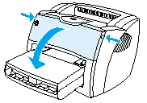
Remove the new toner cartridge from the packaging.
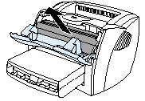
Gently shake the toner cartridge from side to side to distribute the toner evenly inside the cartridge.
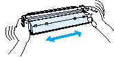
Bend the tab on the right side of the cartridge to break it loose.
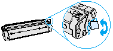
Pull the tab until all the tape is removed from the cartridge. Put the tab in the toner cartridge box to return for recycling.
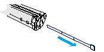
Insert the toner cartridge in the printer, making sure that the toner cartridge is in position. Close the toner door.
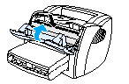
Replace the printer separation pad on the HP1200 printer.
Unplug the power cord from the printer, and allow the printer to cool.
Note: Use the on/off switch on printers operating on 220 V AC.
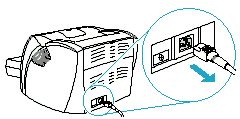
Remove the input trays.
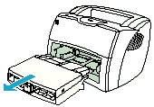
Locate the blue separation pad.
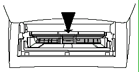
Loosen the separation pad.
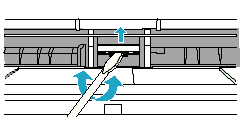
To pry the separation pad up from the spring-loaded base, insert a flat-edged screwdriver in the slot under the separation pad and twist until the tabs are free.
Remove the separation pad by reaching in through the opening, pushing the spring-loaded base down with one hand, and pulling the separation pad up with the other hand.
With one hand, position the new separation pad in the slot of the previous separation pad (A). With the other hand, reach through the input tray opening, and push the spring-loaded base down (B).
Note: The tab on the right is larger to help position it correctly.
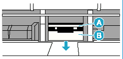
Snap both sides of the separation pad firmly into place.
Caution: When placing the removed reagent storage module on a counter or table, be careful not to damage the connection wires, circuit board, or motor and encoder assemblies. If the separation pad is not straight or there is a space on one side, remove the separation pad, make sure that the larger tab is on the right, reinsert the separation pad, and snap both sides into place.
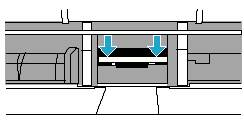
Reinsert the pickup roller, toner cartridge, and input trays. Plug in the printer to turn it back on.
To replace the pickup roller, first remove the old pickup roller on the HP1200 printer.
If the printer regularly misfeeds (no media feeds through, or more than one sheet feeds through), the pickup roller might need to be replaced or cleaned. Order a new pickup roller from the HP web site.
Caution: Failure to complete this procedure might damage the printer.
Unplug the power cord from the printer, and allow the printer to cool.
Open the toner cartridge door and remove the toner cartridge.
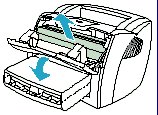
Locate the pickup roller.
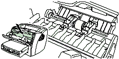
Release the small, white tabs on each side of the pickup roller by pushing them away from the roller, and then rotate the pickup roller toward the front.
Gently pull the pickup roller up and out.
Install the new pickup roller.
Position the pickup roller in the slot.
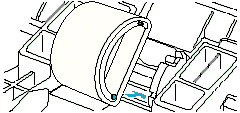
Circular and rectangular pegs on each side prevent incorrect positioning of the pickup roller.
Rotate the top of the pickup roller into position until the white tabs on each side of the roller snap the roller into place.
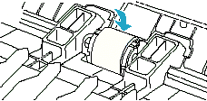
Reinstall the toner cartridge, and close the toner cartridge door.